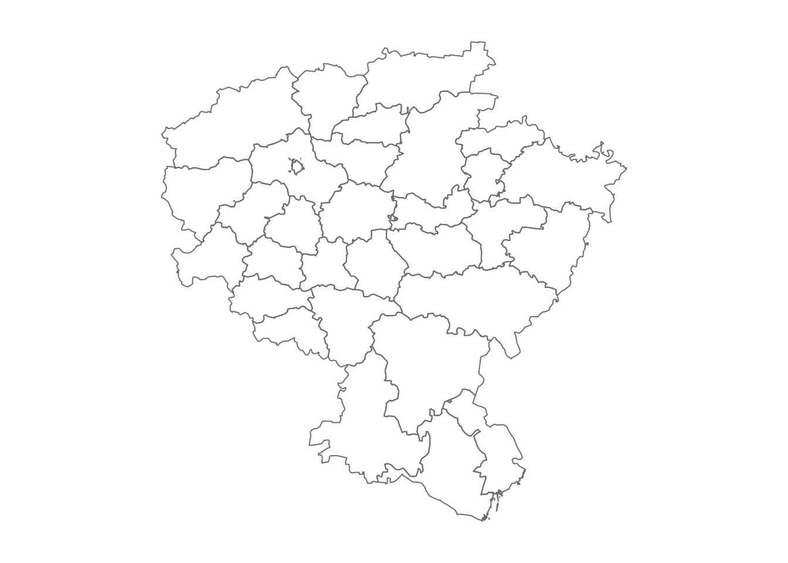
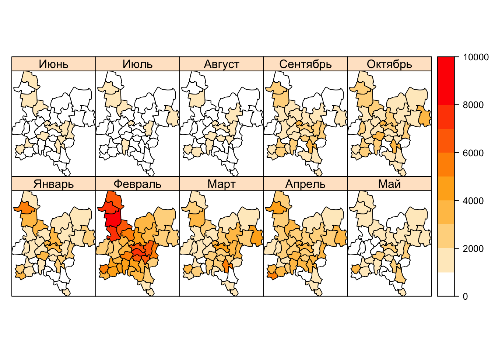
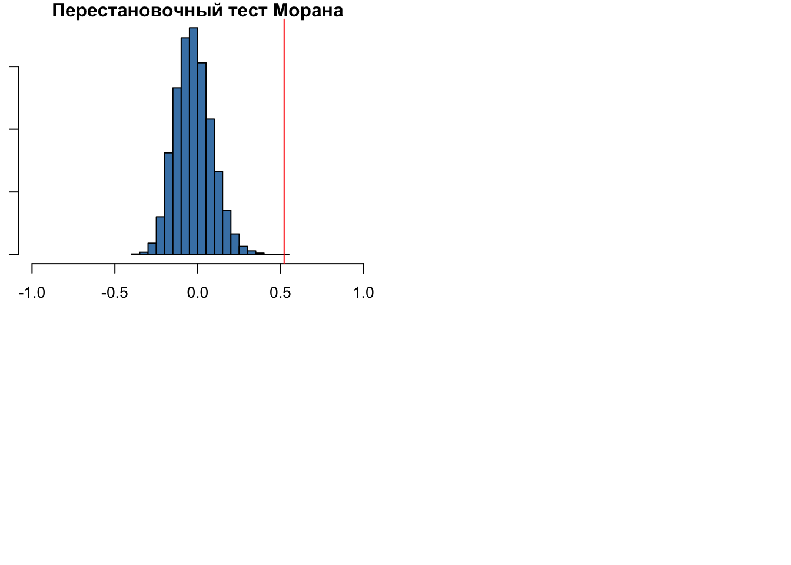

Глава 12 Пространственная статистика 1. Пространственная автокорреляция
В данном модуле мы приступим к исследованию связей в географическом пространстве. Понятие пространственной автокорреляции является математическим отражением первого закона географии: все связано со всем, но близкорасположенные объекты связаны сильнее. Различные коэффициенты пространственной автокорреляции, такие как индекс Морана (Moran’s I) позволяют охарактеризовать силу этой связи с точки зрения математической статистики. Однако для их вычисления необходимо формализовать понятия географической близости, или географического соседства. В настоящем модуле рассматриваются различные подходы к решению данной проблемы.
12.1 Введение
Анализ географического соседства — первый этап исследования пространственной автокорреляции (ПА). Общепринятого определения ПА не существует. Одно из наиболее удачных определений гласит следующее:
Для множества \(S\), состоящего из \(n\) географических единиц, пространственная автокорреляция есть соотношение между переменной, наблюдаемой в каждой из \(n\) единиц и мерой географической близости, определенной для всех \(n(n − 1)\) пар единиц из \(S\) (Hubert et al., 1981)8
Анализ ПА, как правило, осуществляется по жестко зафиксированной сетке (lattice) учетных единиц, в качестве которых могут выступать как площади, так и точки. Но, строго говоря, пространственная статистика в конечном счете любую единицу будет интерпретировать как точку.
Конечной целью исследований ПА является построение статистической модели зависимости значения показателя в каждой единице от значений в соседних единицах и (опционально) неких факторов. Наличие статистически значимой ПА говорит о влиянии процессов, обуславливающих кластеризацию значений в соседних территориальных единицах. И пока эти механизмы не установлены, модель ПА дает инструмент их статистического моделирования. Добавление известных факторов в модель может улучшить точность моделирования.
Как мы уже сказали, исследование ПА начинается с анализа географического соседства. То есть, для каждой анализируемой единицы мы должны определить соседние по отношению к ней единицы. Это не так-то просто,поскольку существует множество способов определить соседство.
Перед выполнением анализа подключим необходимые библиотеки и визуализируем исходные данные:
library(sf)
library(sp)
library(rgdal)
library(spdep) # пакет spdep содержит инструменты анализа ПА
library(lattice)
library(RANN)
library(RColorBrewer)
library(openxlsx)
reg.sf <- st_read('Regions.gpkg')
reg <- as(reg.sf, 'Spatial') # пакет spdep пока что требует объекты класса sp
par(mar = c(1,1,1,1))
plot(reg, border = "gray50")
12.2 Пространственное соседство
В целом, можно выделить три большие группы методов:
- Соседи по смежности
- Соседи по графу
- Соседи по метрике
Соседство по смежности основано на топологических отношениях между объектами и применяется при анализе данных, приуроченных к площадным единицам — например, сетке административно-территориального деления. Смежными считаются объекты, границы которых имеют общие точки. При этом возможно два варианта соседства: по правилу ферзя (QUEEN) и правилу ладьи (ROOK). В первом случае соседними будут считаться все пары территориальных единиц, имеющие хотя бы одну общую точку на границе, т.е. соприкасющиеся сторонами и/или углами. Соседство по правилу ладьи является более строгим, так как разрешает только наличие общих сторон вдоль границ, а точечные касания в расчет не берутся. Отличия правил иллюстрирует рисунок ниже.
Поиск географических соседей по правилу ферзя и правилу ладьи
Соседство по графу основано на отношениях объектов в триангуляции Делоне. В эту же категорию попадают всевозможные фильтрации триангуляции Делоне, которые удаляют из нее ребра, не удовлетворяющие заданным критериям. Более подбробно о них будет сказано ниже.
Соседство по метрике основано на вычислении расстояний между объектаи. Соседними по отношению к каждому объекту будут считаться либо \(K\) ближайших к нему объектов (соседи по количеству), либо все объекты, удаленные на растояние не далее \(D_{max}\) (соседи по расстоянию).
Результатом анализа соседства является граф соседства(neighborhood graph), в котором сами объекты являются вершинами, а связи между ними — ребрами.
Анализ географического соседства на языке R можно провести с помощью пакета spdep.
Рассмотрим суть и принципы построения графов соседства на основе различных принципов.
12.2.1 Соседи по смежности
Список соседей по смежности можно получить с помощью функции poly2nb().
Возвращаемый объект является классом типа nb. Для каждой единицы в нем содержится список номеров соседних по отношению к нему единиц. По умолчанию функция находит соседей по правилу ферзя:
polynei <- poly2nb(reg) # Соседство по правилу ферзя
polynei # посмотрим сводную информацию
class(polynei) # проверим тип объектаДля объектов типа nb в пакете spdep определена своя функция plot(), которая позволяет визуализировать граф соседства. Функция требует на вход координаты точек, в случае площадных единиц для этого используют центроиды площадей, которые можно получить функцией coordinates():
coords <- coordinates(reg)
# Теперь рисуем граф:
plot(reg, border = "gray50")
plot(polynei, coords, pch = 19, cex = 0.5, add = TRUE)
title(main="Соседи по смежности (правило ферзя)")
Для определения соседей по правилу ладьи необходимо вызвать функцию poly2nb() с аргументом queen=FALSE. В нашем случае, правда, это даст тот же результат, поскольку в данных отсутствуют единицы, соприкасающиеся в одной лишь точке:
polynei<-poly2nb(reg, queen=FALSE) # Соседство по правилу ладьи
plot(reg, border="grey70")
plot(polynei, coords, pch = 19, cex = 0.5, add = TRUE)
title(main="Соседи по смежности (правило ладьи)")
Обратим внимание на то, что функция poly2nb() принимает на вход площадные объекты. Все помледующие методы определения соседства (по графу и по метрике) работают с точечными данными.
12.2.2 Соседи по графу
Данная группа методов определения соседства основана на построении триангуляции Делоне для точек исходных данных. Далее эта триангуляция может быть оставлена в неизменном виде, или быть подвержена процедуре фильтрации, которая удалит из нее ребра, не удовлетворяющие заданному критерию.
Соседи по триангуляции Делоне без фильтрации могут быть получены с помощью функции tri2nb():
plot(reg, border="grey70")
trinei<-tri2nb(coords)
plot(trinei, coords, pch = 19, cex = 0.5, add = TRUE)
title(main="Соседи по триангуляции Делоне")
Соседи по сфере влияния получаются путем фильтрации триангуляции Делоне. Для каждой вершины находится расстояние до ближайшего соседа \(D_{min}\) — это расстояние называется радиусом сферы влияния вершины. Остальные ребра триангуляции, инцидентные (примыкающие к) данной вершине, сохраняются только если их длина \(D\) превышает радиус ее сферы влияния не более чем вдвое: \(D \leq 2D_{min}\). Рассуждая геометрически, можно сказать, что сферы радиусом \(D_{min}\), построенные в точке и ее соседях по триангуляции, должны пересекаться. Процесс фильтрации по сфере влияния иллюстрирует рисунок ниже.
Поиск географических соседей по правилу сферы влияния
Поиск соседей по сфере влияния построен по аналогии с принципом сферы действия тяготения из небесной механики.
Построение соседей по правилу сферы влияния осуществляется в 3 шага:
- определение соседей по триангуляции (функция
tri2nb()) - фильтрация триангуляции по правилу сферы влияния (функция
soi.graph()) - преобразование полученного объекта в класс
nb(функцияgraph2nb())
plot(reg, border="grey70")
soinei<-graph2nb(soi.graph(tri2nb(coords), coords))
plot(soinei, coords, pch = 19, cex = 0.5, add = TRUE)
title(main="Соседи по сфере влияния")
Соседи по графу Гэбриела получаются также путем фильтрации триангуляции Делоне. В каждом треугольнике ребро сохранятся только тогда, когда построенная на нем окружность не включает третью точку треугольника (Gabriel, Sokal, 1969)9. Данный метод проиллюстрирован рисунком ниже.

Поиск географических соседей по графу Гэбриела
Поиск соседей по графу Гэбриела осуществляется в 2 шага:
- построение графа Гэбриела (функция
gabrielneigh()) - преобразование полученного объекта в класс
nb(функцияgraph2nb())
plot(reg, border="grey70")
gabnei<-graph2nb(gabrielneigh(coords))
plot(gabnei, coords, pch = 19, cex = 0.5, add = TRUE)
title(main="Соседи по графу Гэбриела")
Относительные соседи по графу получаются путем фильтрации триангуляции Делоне по следующему правилу: ребро \(A\), соединяющее две вершины \(p\) и \(q\), будет удалено, если найдется третья вершина \(r\), такая что расстояния от нее до \(p\) и \(q\) (\(B\) и \(C\) соответственно) окажутся короче, чем \(A\), то есть: \(A > B\) and \(A > C\). Полученный граф носит название графа относительных соседей (relative neighborhood graph). Данный метод был предложен французским информатиком Готфридом Туассеном для выявления структуры множества точек, которая бы максимально соответствовала восприятию человеком формы этого множества (Toussaint, 1980)10.
Поиск соседей по графу относительных соседей осуществляется в 2 шага:
- построение графа относительных соседей (функция
relativeneigh()) - преобразование полученного объекта в класс
nb(функцияgraph2nb())
plot(reg, border="grey70")
relnei<-graph2nb(relativeneigh(coords))
plot(relnei, coords, pch = 19, cex = 0.5, add = TRUE)
title(main="Относительные соседи по графу")
12.2.3 Соседи по метрике
Поиск соседей по метрике — наиболее простой способ определения соседства. Для его использования необходимо задать метрику (как правило, расстояние между точками), а также критерий фильтрации связей: по количеству (\(k\) ближайших) или по расстоянию (не ближе чем \(d_1\), но и не далее чем \(d_2\)).
Поиск соседей по количеству осуществляется в 2 шага:
- построение списка соседей (функция
knearneigh()) - преобразование полученного объекта в класс
nb(функцияknn2nb())
Рассмотрим поиск по количеству на примере нескольких пороговых значений:
par(mfrow = c(2,2))
for (i in 1:4){
knearnei<-knn2nb(knearneigh(coords, k = i))
plot(reg, border="grey70")
plot(knearnei, coords, pch = 19, cex = 0.5, add = TRUE)
title(main = paste("Ближайшие соседи (k =", i, ")", sep = ''))
}
Поиск соседей по расстоянию осуществляется средствами функции dnearneigh(), которая принимает 3 аргумента: координаты точек, минимальное \(d_1\) и максимальное \(d_2\) расстояние. Минимальное расстояние имеет смысл использовать чтобы избежать анализа совпадающих по положению объектов, или когда известен пространственный период явления, превышающий \(d_1\):
par(mfrow = c(2,2))
for (d in 3:6){
dnearnei <- dnearneigh(coords, d1 = 0, d2 = d)
plot(reg, border="grey70")
plot(dnearnei, coords, pch = 19, cex = 0.5, add = TRUE)
title(main = paste("Ближайшие соседи (d <=", d, ")", sep = ''))
}
Итак, мы рассмотрели различные принципы выявления географического соседства. После того, как определен сам факт соседства, необходимо оценить силу пространственной связи между всеми парами соседних единиц. Эта оценка производится путем построения матрицы пространственных весов(spatial weights matrix).
12.3 Пространственные веса
Пространственные веса характеризуют силу связи между единицами. Если единицы не являются соседними (по выбранному правилу), то пространственный вес их связи будет равен нулю. Во всех остальных случаях веса будут ненулевыми. Поскольку теоретически каждая единица может быть связана с любой другой единицей, распространена форма представления весов в виде матрицы \(W\) размером \(N \times N\), где \(N\) – число единиц. На пересечении \(i\)-й строки и \(j\)-го столбца матрицы располагается вес связи между \(i\)-й и \(j\)-й единицей.
Простейший вид матрицы \(W\) — бинарная. Если связь есть, то ее вес равен единице (1), если нет — нулю (0). Для построения бинарной матрицы нужно использовать функцию nb2listw() c параметром style="B":
polynei<-poly2nb(reg)
Wbin<-nb2listw(polynei,style="B")
Wbin # посмотрим, что за объект получается на выходе (listw)Оказывается, что это на самом деле не матрица. Это объект с двумя слотами. В слоте weights содержатся веса, а в слоте neighbours — идентификаторы соседей:
Дело в том, что матрица весов всегда получается разреженной. То есть, в основном она содержит нули. Это логично, поскольку у каждой точки как правило есть лишь ограниченное число соседей. При этом общее количество точек может быть достаточно большим: чем больше точек мы анализируем, тем больше будет нулей в матрице. Получается, что хранить матрицу как матрицу неэкономично. Более рационально для каждого объекта возвращать список весов, которые соответствуют его соседям. Что и делает функция
nb2listw().
Матрицу весов как правило визуализируют, поскольку она может содержать в себе довольно интересные паттерны. Для этого полученный список весов нужно превратить в матрицу с помощью функции listw2mat(). Далее использовать функцию levelplot из пакета lattice, которая раскрашивает ячейки матрицы или растрового набора данных:

Более интересный результат дает нормированная матрица. В ней веса всех соседей нормируются на количество соседей. То есть, если у текущей точки 2 соседа, их веса будут равны 0.5. Если 3 соседа то 0.33, 4 — 0.25 и так далее. Взвешенная матрица позволяет отразить тот факт, что одна и та же территориальная единица может оказывать неодинаковое влияние на соседние единицы:
Wstand<-nb2listw(polynei, style = "W")
M<-listw2mat(Wstand)
ramp <- colorRampPalette(c("white","red"))
levels <- 1/1:10 # шкала 1, 0.5, 0.33, 0.25 ... 0.1
levelplot(M,
main="Матрица весов (нормированная)",
at = levels,
col.regions=ramp(10))
Обратите внимание, что на этот раз цвета в матрице распределены асимметрично.
Однако есть методы определения соседства, которые приведут также и к асимметричному виду самой матрицы, а не только значений. Например, при поиске соседей по количеству соседство A и B вовсе не означает соседство B и A. Проверим это на опыте:
# Ближайшие соседи (k = 1)
knearnei<-knn2nb(knearneigh(coords,k=1))
Wstand<-nb2listw(knearnei, style = "B")
M<-listw2mat(Wstand)
levelplot(M,
main="Матрица весов (нормированная)",
at = levels,
col.regions=ramp(10))
Полученная матрица весов дает искомую меру потенциальной пространственной связи (близости) между всеми парами территориальных единиц. Сопоставив эту меру со значениями показателя, зафиксированными в тех же единицах, можно получить статистическую оценку пространственной автокорреляции изучаемой величины.
12.4 Пространственная автокорреляция
Далее мы рассмотрим вычисление меры пространственной автокорреляции — индекса Морана, который дает оценку статистической зависимости между значением показателя в каждой локации (территориальной единице) и значениями в соседних локациях. Имея предположение о наличии пространственной автокорреляции, можно построить модель пространственной авторегрессии, которая дает фоновое распределение показателя по территориальным единицам, а также случайные остатки.
На этом занятии мы кратко познакомимся со статистической оценкой пространственной автокорреляции, а также построением простейших авторегрессионных моделей.
Мы будем использовать месячную статистику по случаям заболеваний верхних дыхательных путей в Кировской области за 2015 год (данные Росстата по районам, модифицированы автором для большей наглядности анализа).
Вам предстоит выполнить следующую последовательность действий:
- Загрузить исходные данные (границы районов и таблицу со статистикой)
- Присоединить таблицу к пространственным данным
- Построить серию карт по месяцам для визуального анализа данных
- Вычислить матрицу пространственных весов \(W\)
- Вычислить I-индекс Морана для численной оценки пространственной автокорреляции
- Построить диаграмму рассеяния Морана для визуальной оценки пространственной автокорреляции
- Подобрать параметры модели пространственной авторегрессии
- Построить карты реальных, модельных (fitted) значений и остатков (lag)
Для начала построим серию карт чтобы оценить по ним наличие или отсутствие пространственной автокорреляции по месяцам:
# Чтение базовых пространственных данных
mun.sf <- st_read("Kirov.gpkg")
mun <- as(mun.sf, 'Spatial')
# Чтение таблицы со статистикой
# classes <- c("integer", "character", rep("numeric", 10))
tab <- read.xlsx("Kirov.xlsx", 1)
# Соединение таблиц
mun@data <- merge(mun@data, tab, by.x="OBJECTID", by.y="N")
# Построение серии карт
months <- names(mun)[22:31] # выбираем названия столбцов с месяцами
ramp <- colorRampPalette(c("white", "orange", "red"))
levels <- seq(0,10000,1000)
nclasses <- length(levels)-1
spplot(mun, months, at = levels, col.regions = ramp(nclasses))
Данная серия карт показывает, что наиболее интересный для анализа месяц — февраль, в котором наблюдается рост заболеваемости, а также очевидно наличие пространственной автокорреляции с двумя очагами в центральных и северо-зпапдных районах области.
Вычислим матрицу пространственных весов:
# Определение соседства (правило ферзя)
nei<-poly2nb(mun)
# Визиуализация графа соседства
coords <- coordinates(mun)
plot(mun, border="darkgray")
plot(nei, coords, pch = 19, cex = 0.5, add = TRUE)
title(main="Соседи по смежности (правило ферзя)")
# Вычисление весов (нормированная матрица)
W <- nb2listw(nei)
# Визуализация матрицы весов
M<-listw2mat(W)
ramp2 <- colorRampPalette(c("white","red"))
levels2 <- 1/1:10 # шкала 1, 0.5, 0.33, 0.25 ... 0.1
levelplot(M,
main="Матрица весов (нормированная)",
at = levels2,
col.regions=ramp2(10))
12.4.1 Индекс Морана (Moran’s I)
Анализ пространственной автокорреляции осуществляется, как правило, путем вычисления индекса Морана (Moran’s I), : \[ I = \frac{n \sum^n_{i=1} \sum^n_{j=i} w_{ij} (y_i - \bar y)(y_j - \bar y)}{ \Big[\sum^n_{i=1} \sum^n_{j=i} w_{ij}\Big] \Big[\sum^n_{i=1} (y_i - \bar y)^2\Big]} \] где \(n\) — количество единиц, \(w_{ij}\) — вес пространственной связи между \(i\)-й и \(j\)-й единицей, \(y_i\) — значение в \(i\)-й единице, \(\bar y\) — выборочное среднее по всем единицам
Обратим внимание на то, что индекс Морана по сути и форме записи похож на линейный коэффициент корреляции Пирсона, в котором перебираются все пары соответствующих друг другу значений из рядов \(X = \{x_i\}\) и \(Y = \{y_i\}\):
\[ r_{xy} = \frac{\sum_{i=1}^{n}(x_i - \bar x)(y_i - \bar y)}{\sqrt{\sum_{i=1}^{n}(x_i - \bar x)^2} \sqrt{\sum_{i=1}^{n}(y_i - \bar y)^2}} \]
При вычислении индекса Морана происходит нечто подобное, но под соответствием понимается наличие соседства между \(i\)-й и \(j\)-й территориальной единицей. Степень выраженности соседства задается весом \(W_{ij}\), который можно наблюдать в числителе формулы индекса Морана. Таким образом, пары территориальных единиц, для которых \(w_{ij} = 0\), не участвуют в вычислении индекса Морана.
Индекс Морана для нормально распределенных данных лежит в диапазоне от -1 до 1:
- +1 означает детерминированную прямую зависимость — группировку схожих (низких или высоких) значений.
- 0 означает абсолютно случайное распределение (CSR — complete spatial randomness)
- -1 означает детерминированную обратную зависимость — идеальное перемешивание низких и высоких значений, напоминающее шахматную доску
Для вычисления индекса Морана следует использовать функцию moran.test(), которая дополнительно оценивает статистическую значимость полученного значения:
# Вычисление индекса (тест) Морана
moran.test(mun$Февраль, W)
##
## Moran I test under randomisation
##
## data: mun$Февраль
## weights: W
##
## Moran I statistic standard deviate = 5.0335, p-value = 2.408e-07
## alternative hypothesis: greater
## sample estimates:
## Moran I statistic Expectation Variance
## 0.52118132 -0.02564103 0.01180194Результаты теста включают в себя следующие значения:
- Moran I statistic — полученный индекс Морана
- Expectation — математическое ожидание индекса при нулевой гипотезе \(E[I]\)
- Variance — дисперсия ожидаемого значения при нулевой гипотезе \(D[I]\)
- Moran I statistic standard deviate — \(Z\)-оценка вычисленного индекса Морана
- p-value — \(p\)-значение вычисленного индекса Морана
Здесь мы видим, что значение индекса Морана равно ~\(0.52\) (Moran I statistic), то есть присутствует положительная пространственная автокорреляция. При этом вероятность того, что мы ошибаемся в наших выводах, и распределение на самом деле случайно - крайне мала и равна \(2.408 \times 10^{-7})\) (p-value), то есть менее \(0.0001\%\). Можно принимать гипотезу о наличии пространственной автокорреляции.
Рассмотрим чуть подробнее, откуда берутся эти и остальные значения результатов теста, и как их правильно интерпретировать.
Обычно для сравнения принимают предположение о том, что исследуемая величина распределена случайно. Это так называемая “нулевая” гипотеза. После того как мы вычислили индекс Морана по фактическим данным, можно вычислить его аналитически, приняв нулевую гипотезу. В этом случае математическое ожидание индекса \(E[I] = -1/(n-1)\), где \(n\) - количество территориальных единиц. Также может быть вычислена и дисперсия индекса Морана \(D[I]\) (в англоязычной литературе дисперсия обозначается \(V[I]\)).
Эти два параметра определяют функцию распределения индекса Морана при всевозможных случайных расстановках исследуемой величины по территориальным единицам. Грубо говоря, такое распределение получится, если мы извлечем все фактические данные, будем их случайным образом перемешивать между территориями и каждый раз вычислять индекс Морана, повторяя процедуру бесконечное число раз. Полученные индексы будут распределены нормально.
Значимость фактического индекса Морана можно оценить путем его сравнения с ожидаемым значением индекса \(E[I]\) и его стандартным отклонением \(s = \sqrt D\) Для такой оценки используется \(Z\)-тест Фишера. \(Z\)-значение вычисляется по формуле: \(Z = (I - E[I])/s\)
Эта величина говорит нам о том, на какое количество стандартных отклонений фактическое значение индекса Морана удалено от ожидаемого значения. Чем сильнее оно удалено — тем менее вероятно, что фактическое распределение случайно. Какова же эта вероятность? Каждому значению \(Z\)-score соответствует \(p\)-значение (p-value). P-value — это вероятность появления значений, удаленных от мат. ожидания далее чем \(Z\)-score.
Например, при:
- \(Z < -1.96\) или \(Z > +1.96\) значение \(p < 0.05\)
- \(Z < -2.58\) или \(Z > +2.58\) значение \(p < 0.01\)
Это означает, что вероятность того, что фактическое значение индекса Морана могло бы появиться на основе случайно распределенных данных с вероятностью \(5\%\) и \(1\%\) соответственно. Чем меньше \(p\), тем менее вероятно, что распределение случайно. Говорят, что \(p\) — это вероятность сделать ошибку первого рода, т.е. отвергнуть нулевую гипотезу, в то время как она на самом деле является истинной.
12.4.2 Перестановочный тест Морана
Графически вышеприведенные рассуждения можно иллюстрировать с помощью перестановочного теста (permutation test). Для этого значения исследуемой нами величины перемешиваются между территориальными единицами и далее строится гистограмма распределения. Перестановочный тест выполняется с помощью функции moran.mc() с параметром nsim =, задающим число перестановок:
sim<-moran.mc(mun$Февраль, listw = W, nsim = 10000)
sim
# Построим гистограмму по вычисленным индексам:
hist(sim$res,
freq=TRUE,
breaks=20,
xlim = c(-1,1),
main = "Перестановочный тест Морана",
xlab = "Случайный индекс Морана",
ylab = "Частота появления",
col = "steelblue")
# Нанесем фактическое значение
abline(v = sim$statistic, col = "red")
12.4.3 Диаграмма рассеяния Морана
Наконец, еще одним графическим инструментом оценки пространственной автокорреляции является диаграмма рассеяния Морана. По оси \(X\) откладывается значение в каждой территориальной единице, в по оси \(Y\) — ее пространственный лаг, который представляет собой средневзвешенное значение по всем ее соседям:

На диаграмме рассеяния Морана линиями отмечаются средние значения по обеим осям, а наклонной линией представляется линейная регрессия этих значений, при этом тангенс угла наклона кривой равен значению индекса Морана. Поскольку в данном случае распределение явно не случайно, можно приступать к его моделированию.
12.5 Пространственная авторегрессия
В статистике моделирование данных, обладающих автокорреляцией, осуществаляется с помощью авторегрессионных моделей (AR-моделей). Авторегрессионная модель связывает значения временного ряда в данный момент с предыдущими значениями этого же ряда. В пространственной статистике используется аналогичная методика, только в роли данного момента выступает данная территориальная единица, а в роли предыдущих значений — значения в соседних территориальных единицах (см. презентацию). После того как параметры пространственной авторегрессии подобраны, можно вычислить значение в каждой единице по соседним значениям, а также ошибку полученного значения путем вычитания из реального значения.
Простейшая модель пространственной авторегрессии строится как: \[ Z = \mu + \sum b(z-\mu) + \epsilon \] где \(Z\) - значение в текущей единице, \(z\) - значение в соседней единице, \(\mu\) — среднее значение (вычисленное по всем единицам), \(b\) - весовой коэффициент и \(ε\) — случайная ошибка.
Подобное уравнение может быть составлено для каждой территориальной единицы. При этом суммирование производится по всем соседним территориальным единицам а неизвестный коэффициент \(b\) обычно представляют в виде \(b = \lambda w\), то есть как отмасштабированный на величину \(\lambda\) вес связи между единицей и ее текущим соседом. Задача построения модели строится к поиску такого значения \(\lambda\), который бы минимизировал сумму квадратов ошибок ε по всем территориальным единицам.
Если мы знаем, что в каждой единице значение связано не только с окружением, но также с другой величиной, то это можно моделировать заменив в вышеприведенном уравнении \(\mu\) на \(a + bY\), где \(Y\) — объясняющая величина, а коэффициенты \(a\) и \(b\) подбираются путем построения линейной регрессии между \(Z\) и \(Y\).
Для построения модели пространственной авторегрессии используется функция spautolm(), принимающая два основных параметра — формулу и матрицу пространственных весов. Формула — это специальный объект R для обозначения статистической зависимости. Например, если в таблице tab есть столбец Z, зависящий от X и Y, то соответствующая формула будет выглядеть следующим образом:
Z ~ X + YВ случае если зависимости нет, используется следующая нотация:
Z ~ 1Мы будем использовать простейший вариант пространственной авторегрессии без объясняющих факторов \((Z = \mu + \sum \lambda w(z-\mu) + \epsilon)\). Следовательно, используем вариант ~1:
model <- spautolm(mun$Февраль ~ 1, listw=W)
model
##
## Call:
## spautolm(formula = mun$Февраль ~ 1, listw = W)
##
## Coefficients:
## (Intercept) lambda
## 4146.277473 0.704957
##
## Log likelihood: -346.2344Расшифровываются параметры модели следующим образом:
- Intercept = \(\mu\),
- lambda = \(\lambda\)
Извлекаем модельные значения \(Z\) и записываем в таблицу
mun$fitted <- fitted(model)
# Извлекаем остатки ε и записываем в таблицу
mun$residuals <- residuals(model)
# Сравниваем исходные данные, модельные и остатки
spplot(mun,
zcol=c("Февраль","fitted", "residuals"),
names.attr = c("Фактические значения", "Модель", "Остатки"),
at = levels,
col.regions = ramp(nclasses))
| Самсонов Т.Е. Визуализация и анализ географических данных на языке R. М.: Географический факультет МГУ, 2017. DOI: 10.5281/zenodo.901911 |
Hubert, L. J., R. G. Golledge, and C. M. Costanza (1981). Generalized Procedures for Evaluating Spatial Autocorrelation. Geographical Analysis 13, 224–32. DOI: 10.1111/j.1538-4632.1981.tb00731.x↩
Gabriel K. R., Sokal R. R. (1969), A new statistical approach to geographic variation analysis, Systematic Zoology, Society of Systematic Biologists, 18 (3): 259–270, DOI: 10.2307/2412323↩
Toussaint G. T. (1980), The relative neighborhood graph of a finite planar set, Pattern Recognition, 12 (4): 261–268, DOI: 10.1016/0031-3203(80)90066-7↩